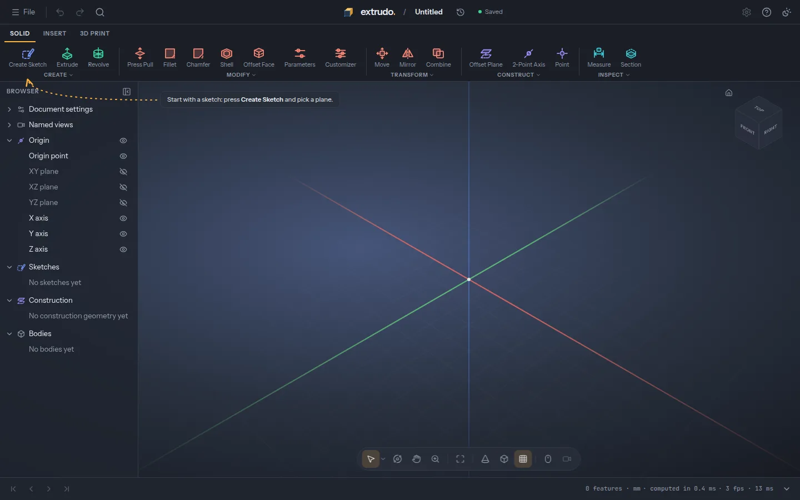
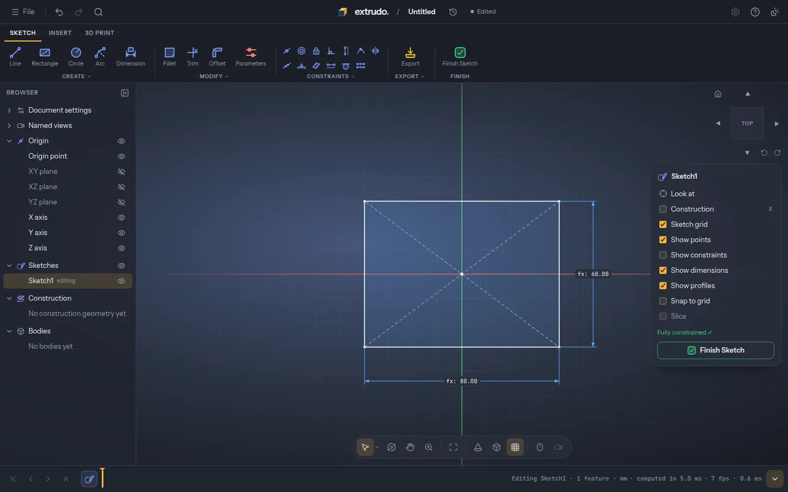
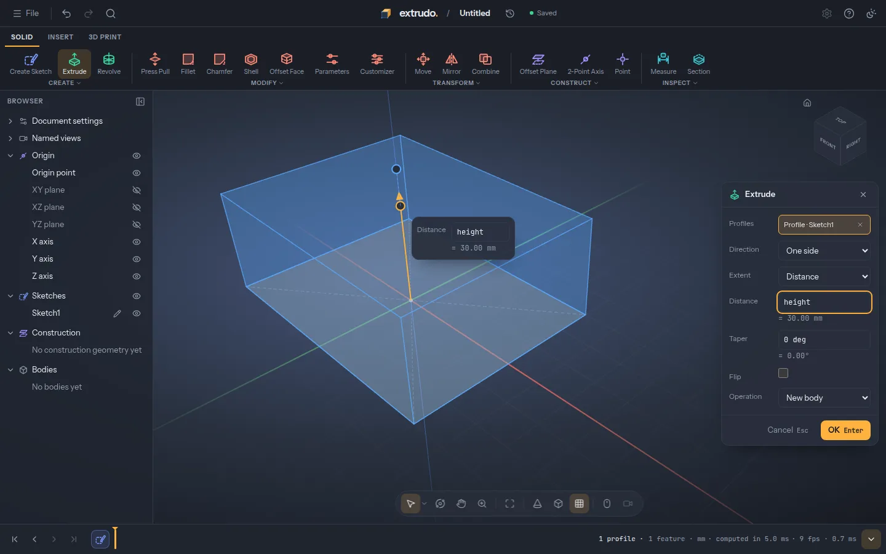
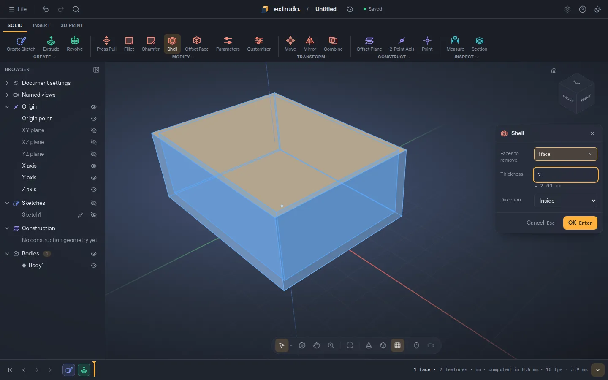
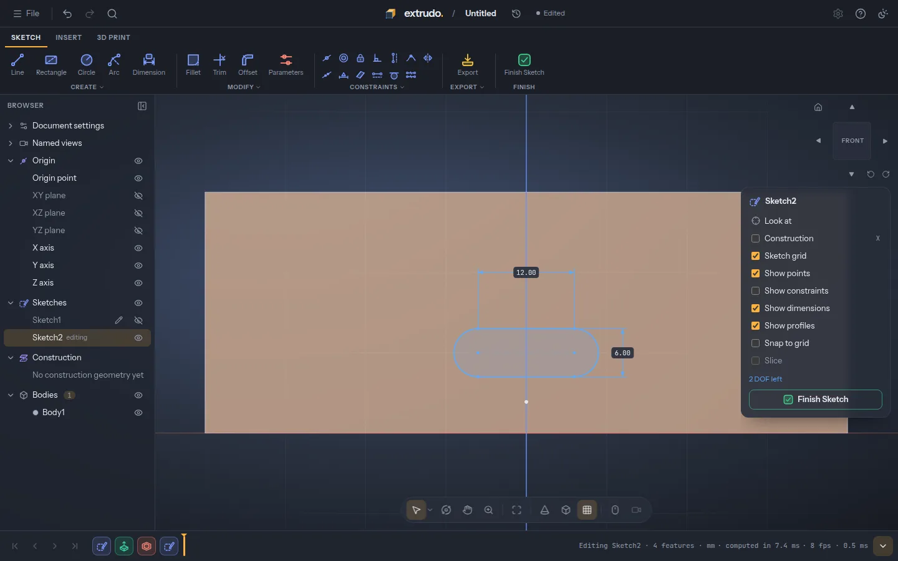
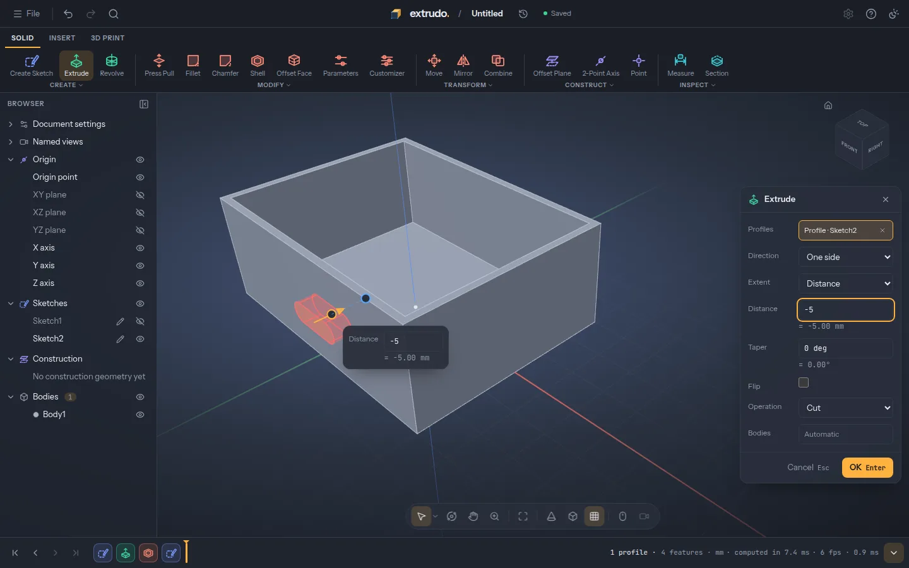
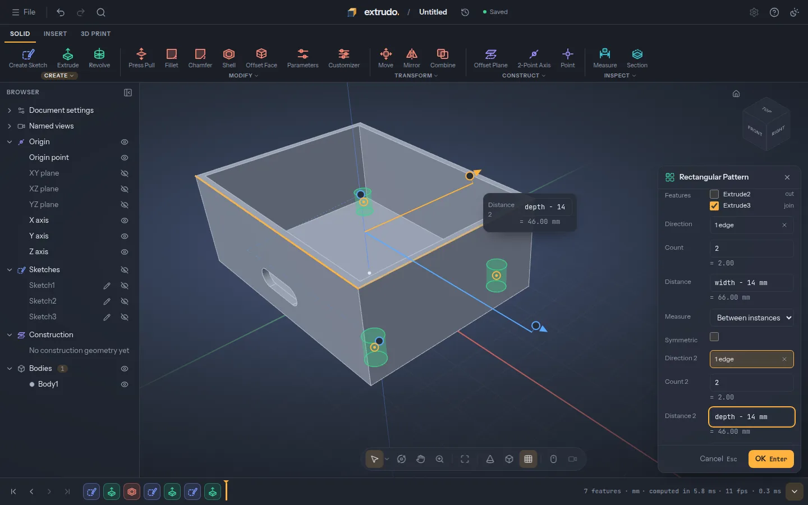
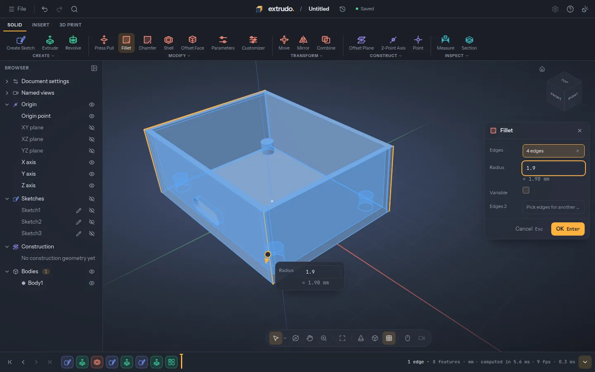
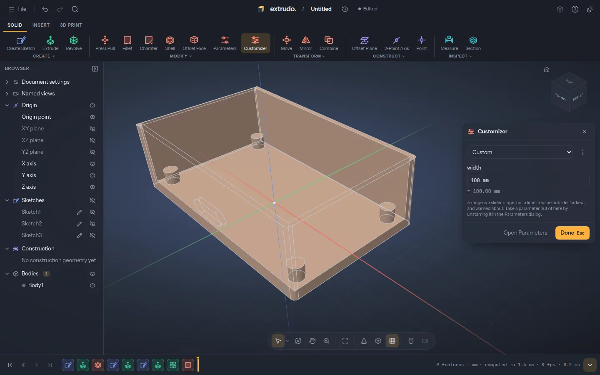

Parametric CAD for 3D printing, in your browser.
Sketch a profile, pull it into a solid, round the edges, and change one number to watch the whole part follow. Free and open source. Nothing to install, no account.
Want the newest features before they're released? Try the latest build. It changes daily and can break.
A box for a circuit board, step by step
Scroll through a real session: every picture is the app itself.
-

Start with an empty design
Press New design. There's nothing to install and no account: the design is saved in your browser.
-

Sketch the outline
Draw a rectangle from its centre and dimension it with two parameters,
widthanddepth, so you can change them later. -

Pull it into a solid
Extrude the rectangle
heightup. The preview shows the block before you press OK. -

Hollow it out
Shell the block with 2 mm walls and the top face removed: that's the tray your board sits in.
-

Sketch on a wall
Start a sketch right on the front face and draw a slot where the USB connector goes.
-

Cut the opening
Extrude the slot into the wall as a cut, just deep enough to go through it.
-

Add screw posts
Extrude one post from the floor, then repeat it to the four corners with a pattern spaced from
widthanddepth. -

Round the corners
Fillet the four outer edges, so the box is nicer to hold and its corners print cleanly.
-

Change one number
Set
widthto 100 mm. The outline, the walls, the slot and the posts all follow: that's what parametric means.
What it does
-
Sketch with constraints
Lines, arcs, circles, slots and splines snap into place with automatic constraints and driving dimensions. A sketch shows how much freedom is left, and says plainly when something contradicts.
-
Real solids
Extrude, revolve, fillet, chamfer, shell, holes and patterns on exact geometry: real circles and fillets, not a mesh of triangles. What you design is what comes out of the printer.
-
Parameters everywhere
Every number takes an expression with units, like
wall * 1.5 + 2 mm. The design is a timeline you can roll back, reorder and edit, and it rebuilds as you go. -
Made for printing
Lay a face flat on the bed, see overhangs, get the weight and filament length, and export 3MF, STL or STEP. Templates for brackets, boxes, lids and enclosures get you started.
-
Yours, offline too
Designs stay on your own machine. It works offline once it has loaded, and you can install it from the browser's menu like an app.
-
Free and open source
GPL-3.0, built in the open. The
.extrudofile format is documented and MIT-licensed, so other tools can read your designs.
Start from a template, or take the tour
A five-step tour walks you through your first part: a sketch, a dimension, an extrude and a fillet. Or open one of the templates and change its parameters.